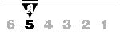

Aften 30/12-1994, side 28

spise ute
SHOGUN
På oppdagelsesferd
Østens Bistro Obervatoriegr. 2BDen reneste oppdagelsesferd i matfatet, er konklusjonen etter besøket på japanske Shogun som har flyttet til Observatoriegaten, ved Universitetsbiblioteket.
Midt i julerushet, mens osloboere flest sto i kø for å få plass på en av flere bordsetninger på overfylte, røykfylte og lutefiskduftende utesteder i sentrum, benket vi oss i romslige båslignende avdelinger, med såpass få besøkende at begge kelnerne og kokken var smilende til stede for å geleide oss gjennom en fremmedartet og sammensatt japansk rett.
Adressen har lenge vært en kinesisk restaurant. Det er den forsåvidt fremdeles, ettersom Shogun kaller seg en Østens bistro og byr på både japansk og kinesisk.
- Ingen grunn til å slutte helt med kinesisk, nordmenn flest er fortrolige med chop suey og den slags. Japansk mat er mer fremmed foreløpig, forklarte vår hyggelige kelner. Interiøret er da også mye det samme som før, her er fortsatt både den litt forstyrrende dammen med fossefall, springvann og røde fisker pluss en hel vegg med kinesisk bambusskog.
Matildes venn ville smake mest mulig nytt og bestemte seg for en Kaiseki bento (345 kroner), som består av et knippe smakebiter fra kokkens beste retter. Matilde valgte en mindre utgave, Shogun bento (245 kroner), som viste seg å være omfattende nok. Rettene ble servert på et stort og et litt mindre brett med kammere for alle de forskjellige ingrediensene, som selvsagt spises med pinner. Og det måtte sake til, varm risvin forskriftsmessig servert i små mugger (á 75 kroner) som drikkes av enda mindre begere.
En opplevelse både for øye og gane, i kammerne var det skiver av rå torsk, laks og tunfisk, her var kunstferdige munnfuller av fisk og grønt i ruller med tang, her var krabbeklør fra Kamchatka, akkarstykker, og sjøtunge, her var fisk og skalldyr og grønnsaker dyppet i tynn røre og fritert så raskt at de fremdeles var rå, her var sukiyaki, syltynn rismelpasta og saftige kyllingstykker på spidd med paprika og løk. Og ris. Og sauser. Særlig den som var basert på revet reddik og fersk ingefær, gjorde den ellers ukrydrede maten herlig. Måltidet ble forøvrig innledet med en purresuppe, inkludert i prisen, der vi stiftet bekjentskap med både tofu (pudding av soya) og tang.
I sannhet mye nytt og fremmed for den som ikke har spist japansk før, men et så rikt og velsmakende måltid gir mersmak med mindre man ikke direkte har i mot rå og rene smaker.
Etter en velfortjent hvilepause bestilte vi en fritert banan (72 kroner) som viste seg å være et fyrverkeri av en dessert; den friterte bananen var omkranset av mango kokt i rødvin, pære kokt i hvitvin, en krans av kiwi og melon og varme kastanjer i is. Det hele pyntet med sukkerspinn!
Menyen omfatter mye spennende til varitert pris. Et knippe forretter omtrent til gjennomsnittspris, og hovedretter av fisk og kjøtt fra ca. 150 og 250 kroner. Spesialiteten er blant annet et utvalg av hvalkjøttretter, som kelneren betrodde oss at japanske turister strømmer til i busslaster for å spise. For det er sjelden delikatesse.
Vi har mye å lære . . .
MATILDE & CO

[Innhold] [Info] [Aftenposten
hjemmeside] [Storbyliv hovedside]